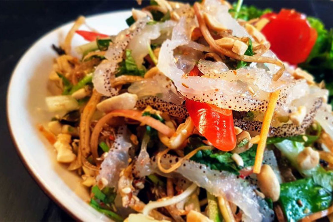

Nộm Sứa
Nộm Sứa là món khai vị thanh mát, giòn ngon với vị chua cay mặn ngọt hòa quyện, rất phù hợp cho những ngày hè nóng bức hoặc để chống ngán trong các bữa tiệc. Sứa giòn sần sật kết hợp cùng các loại rau củ tươi mát và nước trộn gỏi đậm đà tạo nên một hương vị độc đáo, kích thích vị giác.



Nguyên liệu
- Sứa: 250g sứa tươi hoặc sứa khô đã sơ chế (chọn loại sứa ăn liền đóng gói sẵn để tiện lợi).
- Hành tây: 1/2 củ nhỏ, bóc vỏ, thái lát mỏng.
- Cà rốt: 1/2 củ, gọt vỏ, bào sợi.
- Dưa chuột: 1 quả, rửa sạch, thái lát mỏng hoặc bào sợi.
- Xoài xanh: 1/2 quả (chọn xoài xanh giòn, chua nhẹ), gọt vỏ, thái sợi.
- Rau thơm: Một ít rau mùi (ngò rí), húng quế (rửa sạch, thái nhỏ hoặc để nguyên lá).
- Tỏi: 1-2 tép, băm nhỏ.
- Ớt tươi: 1 quả (tùy độ cay mong muốn, thái lát hoặc băm nhỏ).
-
Gia vị làm nước trộn gỏi:
- Nước mắm ngon: 3 muỗng canh.
- Đường: 3 muỗng canh.
- Nước cốt chanh tươi: 3 muỗng canh.
- Nước lọc: 2 muỗng canh.
- Lạc rang: 50g, giã dập (giữ lại một ít để rắc lên trên khi trình bày).
- Vừng rang: 1 muỗng cà phê (tùy chọn, để tăng thêm hương thơm).
Cách làm
-
Bước 1: Sơ chế sứa
- Nếu dùng sứa tươi: Ngâm sứa trong nước lạnh có pha chút phèn chua hoặc gừng đập dập khoảng 15-20 phút để sứa nhả hết độc tố và bớt tanh. Sau đó rửa sạch lại nhiều lần dưới vòi nước chảy, bóp nhẹ để sứa ra hết nước. Cắt sứa thành sợi hoặc miếng vừa ăn (khoảng 3-4cm).
- Nếu dùng sứa đóng gói sẵn (sứa ăn liền): Chỉ cần tráng sứa qua nước sôi hoặc nước ấm khoảng 1-2 lần để loại bỏ bớt mùi và chất bảo quản, sau đó vắt thật ráo nước.
-
Bước 2: Sơ chế các loại rau củ
- Cà rốt, dưa chuột, xoài xanh: Gọt vỏ (nếu cần), rửa sạch. Dùng dụng cụ bào sợi hoặc dao thái thành sợi mỏng, dài.
- Hành tây: Bóc vỏ, thái lát thật mỏng. Ngâm hành tây vào tô nước đá lạnh có pha chút giấm hoặc chanh khoảng 10-15 phút để hành bớt hăng và giòn hơn. Sau đó vớt ra, để ráo.
- Rau mùi, húng quế: Rửa sạch, thái nhỏ hoặc để nguyên lá tùy thích.
- Lạc: Rang vàng, bỏ vỏ, giã dập (không giã quá nát).
- Vừng: Rang thơm (nếu dùng).
-
Bước 3: Pha nước trộn gỏi
- Trong một bát nhỏ, cho 3 muỗng canh nước mắm ngon, 3 muỗng canh đường, 3 muỗng canh nước cốt chanh tươi và 2 muỗng canh nước lọc vào.
- Khuấy đều cho đường tan hoàn toàn.
- Thêm tỏi băm và ớt băm nhỏ vào. Nêm nếm lại cho vừa khẩu vị chua, cay, mặn, ngọt hài hòa.
-
Bước 4: Trộn nộm
- Trong một tô lớn, cho sứa đã sơ chế, cà rốt bào sợi, xoài xanh thái sợi, dưa chuột thái lát/sợi và hành tây đã ngâm đá vào.
- Rưới từ từ hỗn hợp nước trộn gỏi đã pha vào tô.
- Dùng đũa hoặc tay trộn đều nhẹ nhàng để các nguyên liệu thấm đều nước trộn. Tránh bóp mạnh tay làm nát rau củ.
- Để nộm nghỉ khoảng 5-10 phút cho thấm vị.
-
Bước 5: Hoàn thiện và thưởng thức
- Cho nộm sứa ra đĩa.
- Rắc đậu phộng rang giã dập và vừng rang (nếu dùng) lên trên.
- Trang trí thêm rau mùi và húng quế.
- Món nộm sứa ngon nhất khi dùng ngay sau khi trộn để giữ được độ giòn của sứa và các loại rau củ. Có thể ăn kèm với bánh phồng tôm.
Mẹo nhỏ để Nộm Sứa ngon hơn:
- Sơ chế sứa kỹ: Đây là bước quan trọng nhất để nộm sứa không bị tanh và giòn ngon. Nếu dùng sứa tươi, cần ngâm và rửa kỹ nhiều lần.
- Vắt ráo nước: Đảm bảo sứa và các loại rau củ đã được vắt thật ráo nước sau khi sơ chế để nộm không bị ra nước và giữ được độ giòn.
- Hành tây: Ngâm hành tây trong nước đá lạnh giúp hành giòn hơn và giảm độ hăng.
- Nước trộn gỏi: Nêm nếm nước trộn gỏi theo khẩu vị cá nhân. Tỷ lệ chua - cay - mặn - ngọt cần hài hòa để món gỏi ngon.
- Lạc rang: Rang lạc vừa tới, không cháy sẽ giúp lạc thơm bùi. Giã dập vừa phải, không quá nát để khi ăn vẫn cảm nhận được độ giòn của hạt.
- Trộn gỏi: Trộn gỏi ngay trước khi ăn để đảm bảo độ tươi ngon và giòn của các nguyên liệu.
- Thêm topping: Bạn có thể thêm một ít thịt gà luộc xé sợi, tai heo luộc thái sợi hoặc chả lụa thái sợi vào nộm để tăng thêm hương vị và độ phong phú.
▶️ Xem video hướng dẫn chi tiết
← Quay lại trang chủ
Bình luận và Đánh giá
Đánh giá của bạn
Chưa có bình luận nào.